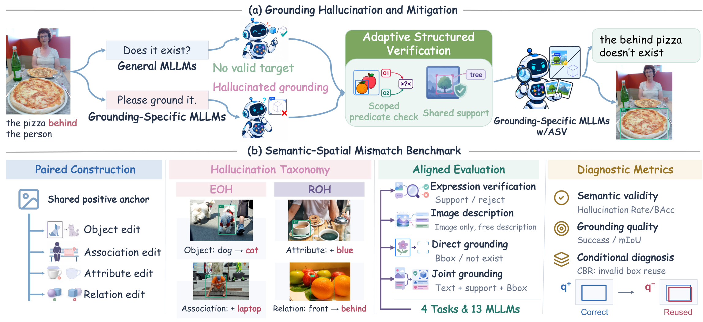
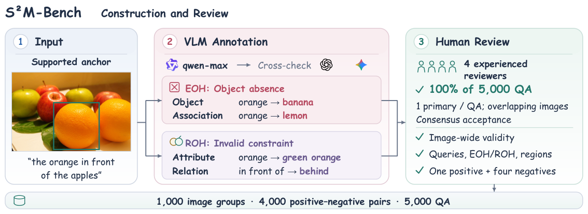
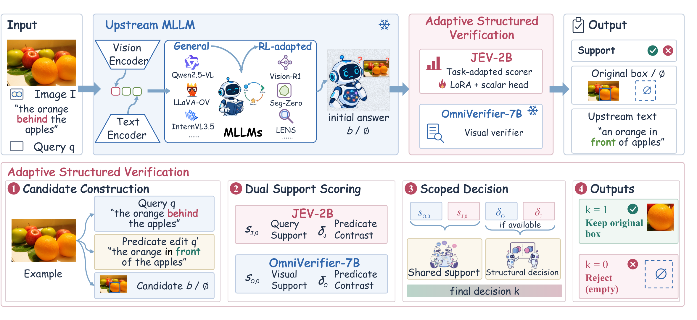
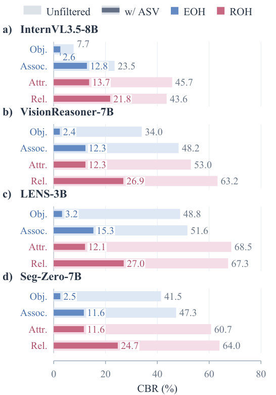
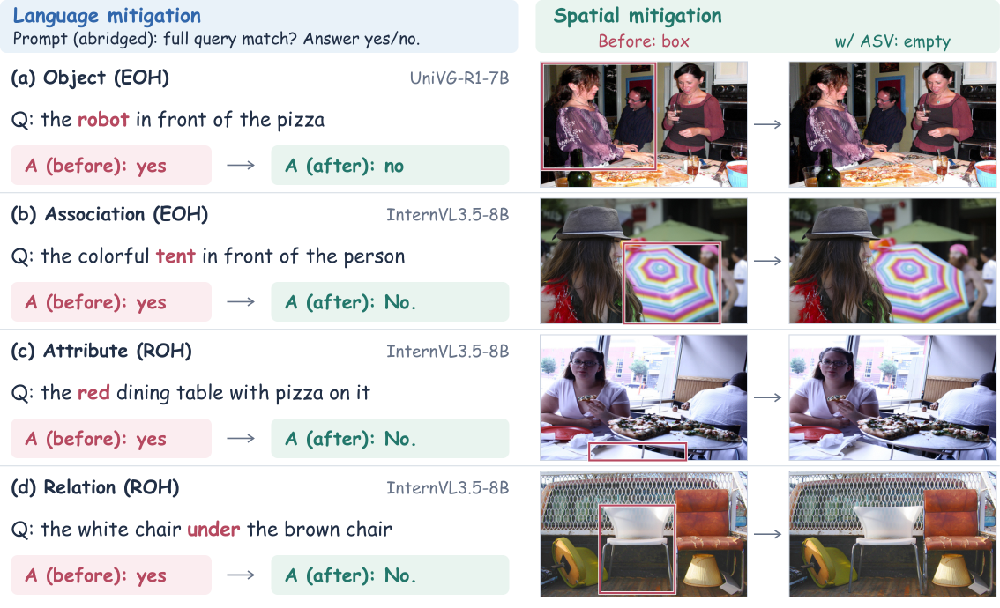
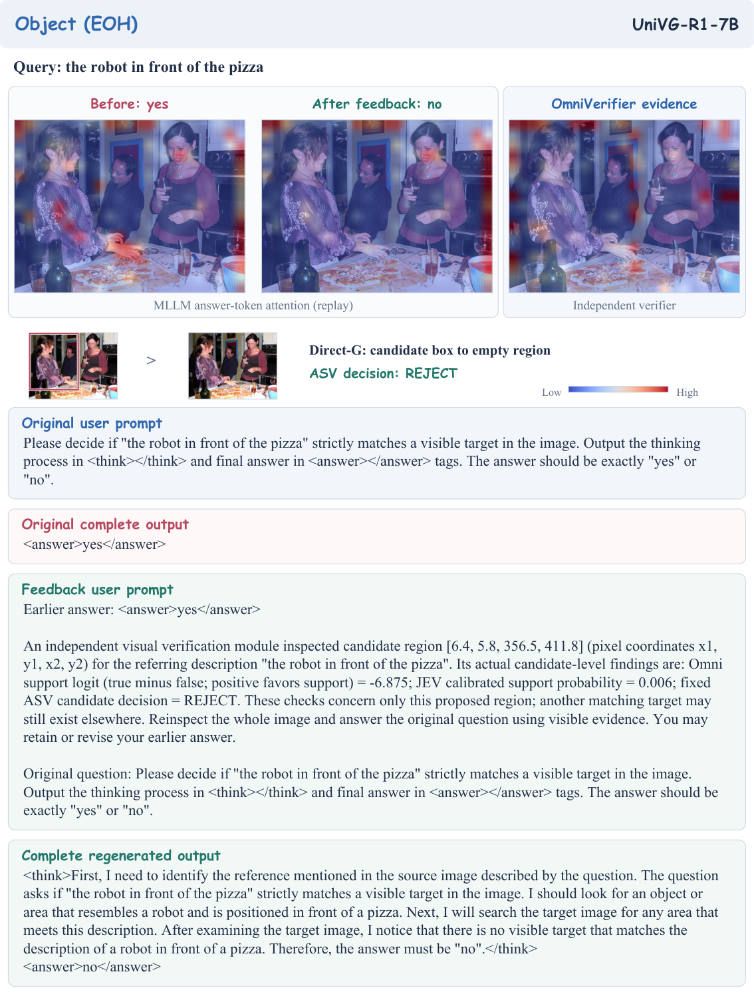
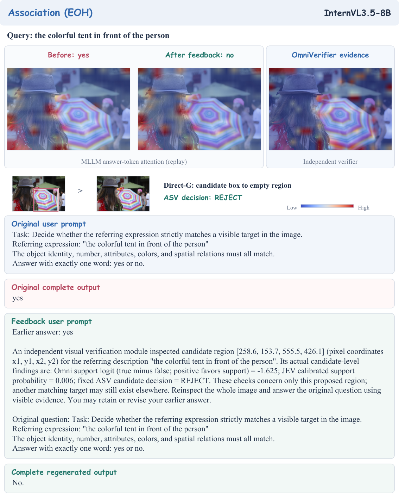
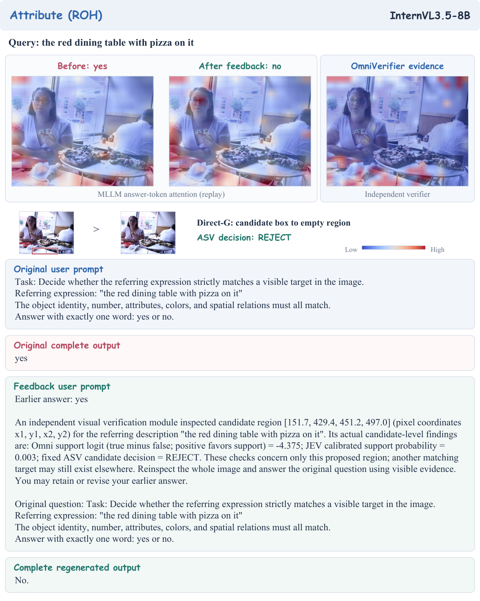
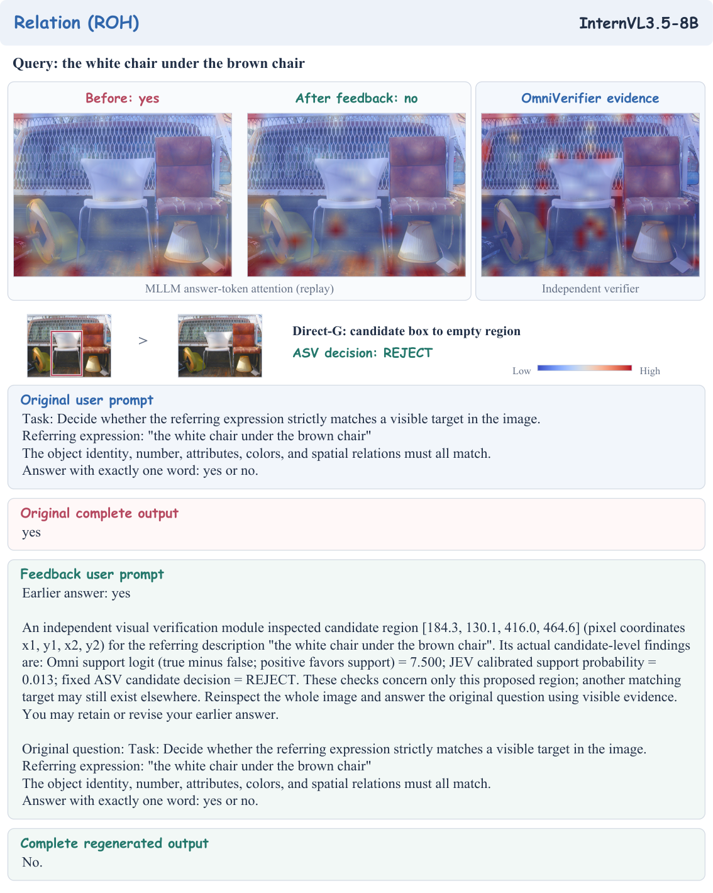

🌟 Introduction

🗂️ S²M-Bench
Controlled Construction and Human Review
We construct 1,000 groups from RefCOCOg. Four unsupported variants per anchor give 4,000 positive–negative pairs and 5,000 image–expression items. Each group shares one supported expression and its target box.
An object edit replaces an object mention with an absent category. An association edit introduces a contextually plausible but absent object suggested by the scene . Both produce EOH negatives, including when the missing object is a reference object. An attribute edit assigns an unsupported property; a relation edit changes a predicate or participant roles. These ROH edits preserve the visibility of all required objects.

Benchmark Statistics
| Property | Value |
|---|---|
| Image groups | 1,000 |
| Positive–negative pairs | 4,000 |
| Distinct image–expression items | 5,000 |
| Negative edit types | Object, Association, Attribute, Relation |
| Evaluated models | 4 General MLLMs + 9 Grounding-Specific MLLMs |
| Aligned tasks | Verification, Captioning, Direct Grounding, Joint Grounding |
Conditional Box Reuse (CBR)
CBR tests whether a negative query reuses the region correctly localized for its positive counterpart. Positive correctness uses IoU ≥ 0.5; negative-to-positive box reuse uses IoU ≥ 0.8. Paired negatives that yield refusals remain in the denominator. For filtering evaluations, positive eligibility and reference boxes are fixed before filtering.
🔎 Adaptive Structured Verification
Adaptive Structured Verification (ASV) filters candidate boxes through two stages: complete-expression support scoring and selective predicate comparison. ASV either retains its original coordinates or returns an empty output.

ASV combines an adapted JEV-2B scalar head with frozen OmniVerifier-7B support scores. For selected relations, each verifier scores matched alternative predicates on the same image and candidate box. The final monotone gate preserves earlier rejections. Heads and thresholds use image-level two-fold cross-fitting at nominal retention target 0.95.
📊 Experimental Results
Main Results on S²M-Bench
All 13 unfiltered MLLMs have higher ROH than EOH error rates in verification, direct grounding, and joint grounding. General and Grounding-Specific MLLMs have similar positive mIoU (0.4331/0.4240), yet their direct-grounding FGR differs by 31.19 points (37.64/68.83%).
| Models | Existential Object Hallucination | Referential Object Hallucination | ||||||
|---|---|---|---|---|---|---|---|---|
| Verif. | Caption | Direct-G | Joint-G | Verif. | Caption | Direct-G | Joint-G | |
| FAR ↓ | Assert. ↓ | FGR ↓ | FGR ↓ | FAR ↓ | Assert. ↓ | FGR ↓ | FGR ↓ | |
| General MLLMs (n=4) | ||||||||
| Qwen3-VL-8B | 11.6 | 10.1 | 10.1 | 11.9 | 35.8 | 3.6 | 32.2 | 33.0 |
| Qwen2.5-VL-7B | 11.8 | 8.6 | 20.0 | 19.5 | 32.9 | 3.4 | 49.0 | 48.2 |
| InternVL3.5-8B | 14.3 | 8.1 | 41.6 | 27.7 | 38.2 | 3.1 | 80.9 | 52.0 |
| LLaVA-OV-7B | 28.8 | 4.1 | 18.2 | 90.9 | 62.1 | 1.5 | 49.1 | 95.5 |
| Grounding-Specific MLLMs (n=9) | ||||||||
| LENS-3B | 25.1 | 7.7 | 90.4 | 24.0 | 49.6 | 2.5 | 98.0 | 33.1 |
| Orsta-7B | 15.1 | 8.7 | 27.9 | 22.6 | 37.8 | 3.2 | 60.4 | 52.5 |
| Seg-R1-7B | 10.2 | 9.7 | 47.0 | 17.9 | 31.4 | 3.5 | 76.5 | 45.3 |
| Seg-Zero-7B | 29.6 | 9.2 | 95.3 | 23.7 | 60.8 | 3.6 | 98.9 | 52.3 |
| TreeVGR-7B | 48.9 | 8.9 | 62.2 | 42.7 | 84.9 | 3.2 | 89.0 | 76.3 |
| UniVG-R1-7B | 25.4 | 7.8 | 99.7 | 78.7 | 48.5 | 2.6 | 99.9 | 96.1 |
| Vision-R1-7B | 16.8 | 8.9 | 22.3 | 27.9 | 43.9 | 3.0 | 53.3 | 59.7 |
| VisionReasoner-7B | 28.3 | 8.7 | 73.5 | 30.5 | 56.2 | 3.5 | 88.2 | 61.4 |
| Visual-RFT-7B | 13.4 | 9.0 | 17.2 | 56.2 | 39.7 | 3.7 | 39.3 | 74.9 |
| Models w/ ASV | ||||||||
| InternVL3.5-8B w/ ASV | 14.3 | 8.1 | 14.8 | 11.5 | 38.2 | 3.1 | 33.1 | 28.7 |
| UniVG-R1-7B w/ ASV | 25.4 | 7.8 | 12.7 | 15.2 | 48.5 | 2.6 | 30.5 | 37.5 |
Four-task rates for 13 MLLMs (%). FAR: false acceptance in verification; Assert.: false assertion of annotated negative units in captions; FGR: parsed coordinate emissions in grounding. ASV preserves upstream language outputs.
Verifier Complementarity
| Metric | OmniVerifier only | JEV only | Both verifiers |
|---|---|---|---|
| FGR ↓ | 26.89 | 25.01 | 22.55 |
| EOH FGR ↓ | 15.11 | 14.45 | 12.20 |
| ROH FGR ↓ | 38.68 | 35.56 | 32.89 |
| Correct-grounding retention ↑ | 94.00 | 93.30 | 94.26 |
| mIoU ↑ | 0.3991 | 0.3983 | 0.4011 |
Verifier-score ablation on 1000 images across 13 MLLMs with fixed candidates, two-fold cross-fitting, and retention target 0.95. Rates are percentages; means weight models equally. Best values are bold.
Effect of Structural Comparison
Shared support reduces FGR from 59.23% to 22.55%; structural comparison further reduces it to 19.03%. This additional rejection changes retention from 94.26% to 91.83% and mIoU from 0.4011 to 0.3914.
| Metric | Unfiltered | Shared | ASV |
|---|---|---|---|
| FGR ↓ | 59.23 | 22.55 | 19.03 |
| EOH FGR ↓ | 48.11 | 12.20 | 11.71 |
| ROH FGR ↓ | 70.36 | 32.89 | 26.36 |
| Object CBR ↓ | 16.47 | 1.69 | 1.69 |
| Assoc. CBR ↓ | 25.63 | 9.22 | 9.04 |
| Attr. CBR ↓ | 33.96 | 8.32 | 8.08 |
| Relation CBR ↓ | 42.79 | 27.14 | 19.05 |
| Correct-grounding retention ↑ | 100.00 | 94.26 | 91.83 |
| mIoU ↑ | 0.4268 | 0.4011 | 0.3914 |
Direct-grounding ASV stage ablation across 13 MLLMs. Shared combines JEV and OmniVerifier support scores; ASV adds structural comparison. Candidates, original positive eligibility, and reference boxes are fixed; means weight models equally. Calibration targets 0.95 retention. Rates are percentages; mIoU covers all positives. Best values are bold.
Download per-model ASV results ↓
Conditional Box Reuse

🖼️ Qualitative Analysis
In the EOH cases, UniVG-R1 assigns a person region to a robot query, while InternVL3.5 assigns an umbrella to a tent query. In the ROH cases, the table is visible but not red, and the white chair is beside, rather than under, the brown chair.

Complete Prompts and Attention Maps
Each case pairs the archived verification answer with the same MLLM’s regenerated answer after verifier feedback, alongside the Direct-G candidate and ASV decision. The separate verifier-feedback probe and ASV spatial filtering are distinguished in the paper.




📚 BibTeX Citation
@misc{an2026rrwr,
title={Right Region, Wrong Reference: Diagnosing Unsupported Grounding in MLLMs},
author={An, Yibo and Yan, Zhonghao and Yang, Yuxuan and Chen, Hao and Jing, Ruoyan and Diao, Muxi and Liang, Kongming and Jiang, Zhuqing and Ma, Zhanyu and Men, Aidong},
year={2026},
url={https://salah-sudo233.github.io/rrwr-project-page/}
}